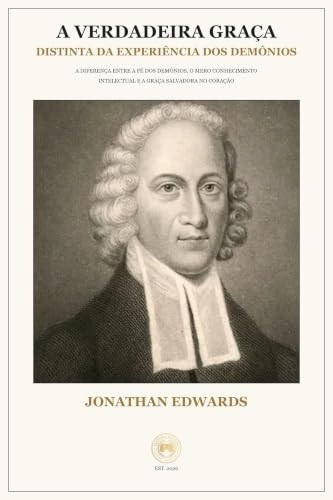

Poucos tratados teológicos na história do cristianismo ocidental penetram tão profundamente no coração humano quanto o célebre sermão de Jonathan Edwards (1703–1758) pregado perante o sínodo de Nova York em 1752: A Verdadeira Graça Distinta da Experiência dos Demônios. Com o bisturi de uma lógica filosófica irrepreensível aliada a uma devoção bíblica incandescente, Edwards desmonta as falsas seguranças da religiosidade exterior e desafia cada leitor a examinar se a sua fé é genuinamente salvadora.
1. O Contexto: Fogo Divino ou Ilusão Emocional?
Durante o Primeiro Grande Despertamento (década de 1740), as colônias americanas foram sacudidas por uma poderosa onda de conversões e reavivamento religioso. Contudo, em meio às manifestações sinceras da graça, surgiram também excessos emocionais, fanatismo e pessoas que confundiam impressões sensoriais ou medos temporários com a regeneração genuína do Espírito Santo.
Edwards assumiu a responsabilidade pastoral de fornecer critérios bíblicos infalíveis para que pastores e crentes pudessem discernir o trigo do joio. A questão central de seu ministério tornou-se: Quais são as marcas que provam que uma pessoa realmente nasceu de novo e foi selada pelo Espírito Santo?
2. O Ponto de Partida Chocante: Tiago 2:19
Edwards escolhe como texto-base as contundentes palavras do apóstolo Tiago: “Crês tu que Deus é um só? Fazes bem; os demônios também o creem, e tremem.”
A partir desse versículo, Edwards desenvolve uma tese perturbadora para os autoconfiantes: quase tudo o que muitos cristãos professos apontam como evidência de sua salvação é plenamente compartilhado pelos próprios demônios no inferno!
- Conhecimento Teológico Preciso: Os demônios possuem uma ortodoxia intelectual impecável. Eles sabem que Deus existe, sabem que Jesus é o Filho de Deus (“Bem sei quem és: o Santo de Deus!”, Marcos 1:24), creem na expiação, na ressurreição e na iminência do juízo final;
- Sensibilidade e Medo do Julgamento: Os demônios não são ateus zombadores; eles "tremem" diante da majestade e da justiça retributiva de Deus;
- Zelo e Atividade Incessante: Os espíritos decaídos são infinitamente ativos em suas esferas, compreendendo as realidades do mundo invisível muito melhor do que qualquer filósofo terreno.
“Não há nada na mente de Satanás que seja ignorante da verdade de Deus, exceto o amor santo por ela. Ele a enxerga, a reconhece e a odeia com desespero eterno.” — Jonathan Edwards, A Verdadeira Graça Distinta da Experiência dos Demônios

A Verdadeira Graça Distinta da Experiência dos Demônios
Tratado magistral de Jonathan Edwards sobre discernimento espiritual, a natureza da fé salvadora e a diferença vital entre a iluminação do intelecto e o amor santo infundido no coração pelo Espírito Santo.
3. O Que os Demônios Jamais Poderão Ter: O Santo Amor
Se o saber teológico, o medo do inferno e as emoções intensas não são provas definitivas de salvação, o que distingue a verdadeira graça? Edwards responde com precisão inigualável: a beleza moral e a excelência divina contempladas e amadas por Si mesmas.
O homem não-regenerado e os demônios podem desejar os benefícios de Deus (a salvação do inferno, a prosperidade terrena, a paz na consciência), mas eles não amam a Deus por causa da Sua santidade intrínseca. Para o ímpio, a santidade de Deus é uma ameaça terrível.
Em contraste, a alma regenerada pelo Espírito Santo recebe um "novo senso divino" — um novo paladar espiritual. Ela contempla a santidade, a justiça e a glória de Deus em Cristo Jesus e as acha infinitamente amáveis, doces e gloriosas, não apenas pelo que Deus faz, mas por Quem Deus é.
4. As Frutas Práticas da Fé Salvadora
Para Edwards, a fé genuína nunca permanece estéril em elucubrações místicas. O amor santo gera necessariamente frutos visíveis e duradouros na conduta diária:
- Humildade Evangélica Real: Quem contempla a santidade de Deus torna-se pequeno aos seus próprios olhos, abandonando o orgulho espiritual e a arrogância denominacional;
- Amor Genuíno aos Irmãos e aos Inimigos: O coração santificado reflete o amor sacrificial de Cristo, buscando perdoar e abençoar;
- Obediência Perseverante: A obediência do crente regenerado não é motivada por coação de escravo temendo o chicote do castigo, mas pelo deleite filial do filho que ama agradar ao Pai amantíssimo.
Conclusão: Um Chamado ao Autoexame Sincero
Em uma era em que a igreja frequentemente confunde engajamento político, entusiasmo de plateia ou conhecimento acadêmico com espiritualidade viva, o alerta de Jonathan Edwards soa mais urgente do que nunca. Não basta saber teologia; é indispensável ter o coração incendiado pelo amor de Deus.
A Editora Pactum convida você a mergulhar nas páginas de A Verdadeira Graça Distinta da Experiência dos Demônios e permitir que este grande clássico ilumine os recônditos da sua alma com a luz radiante do evangelho da graça soberana.